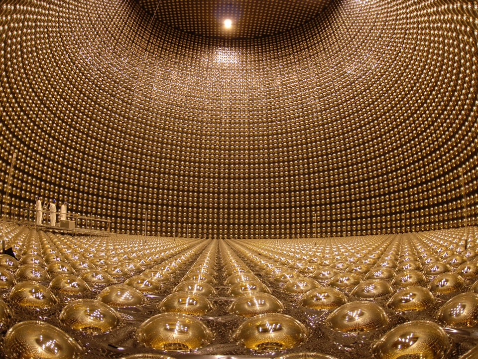
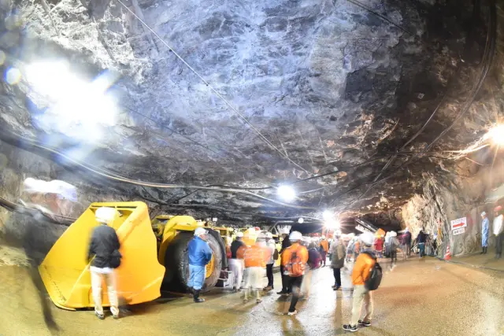
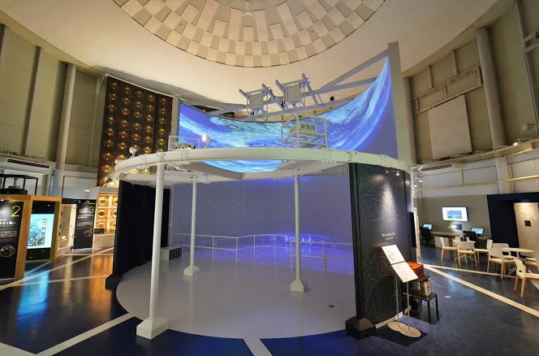
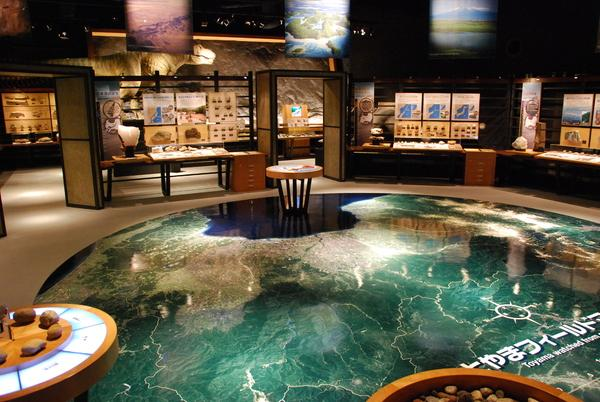
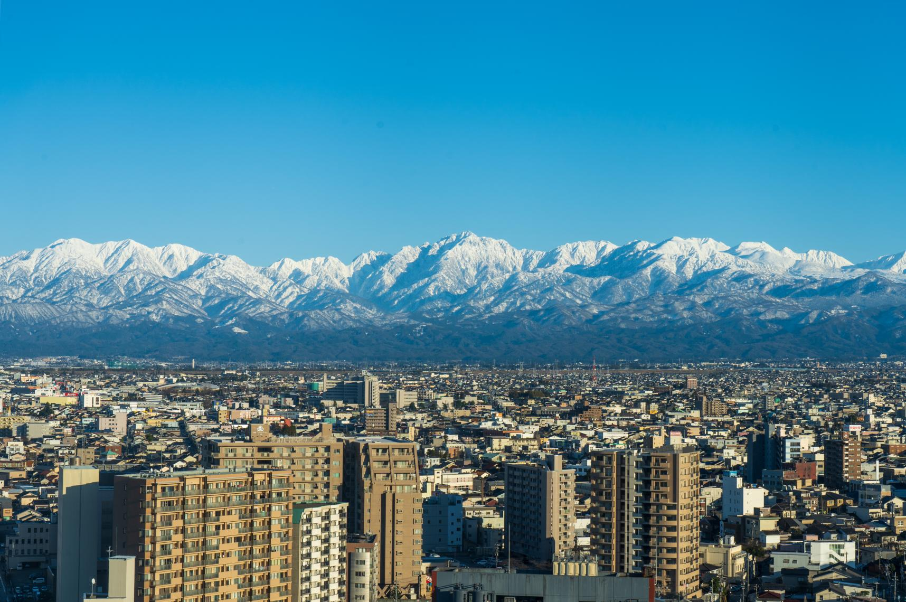
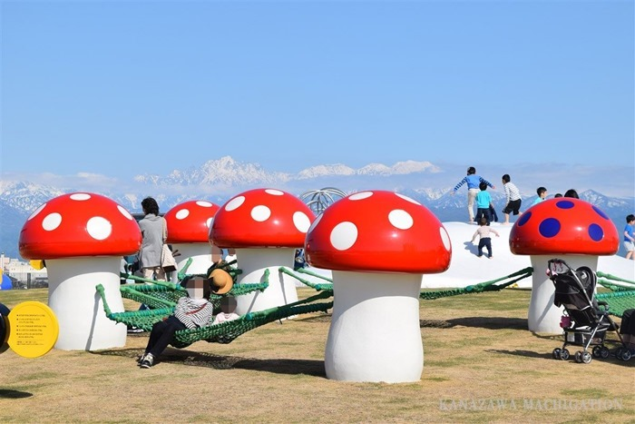
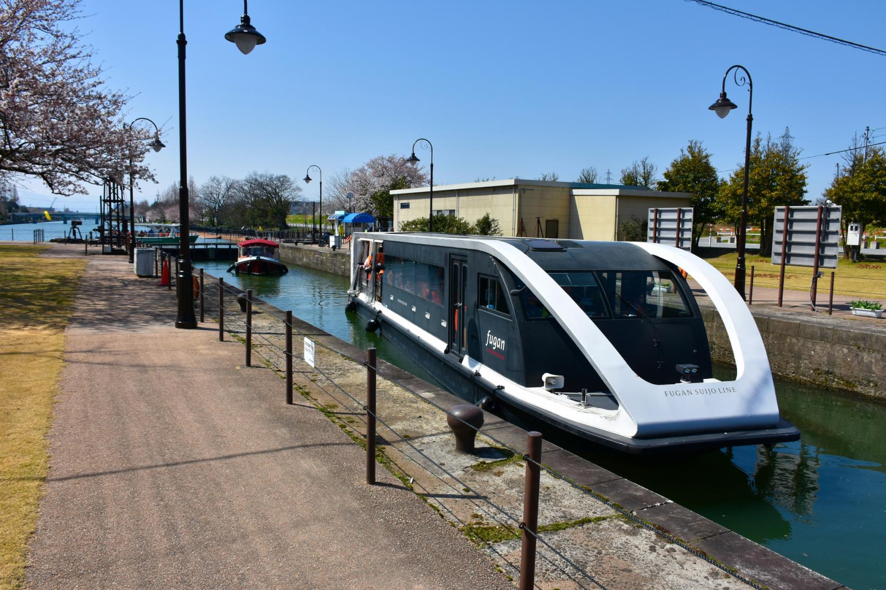
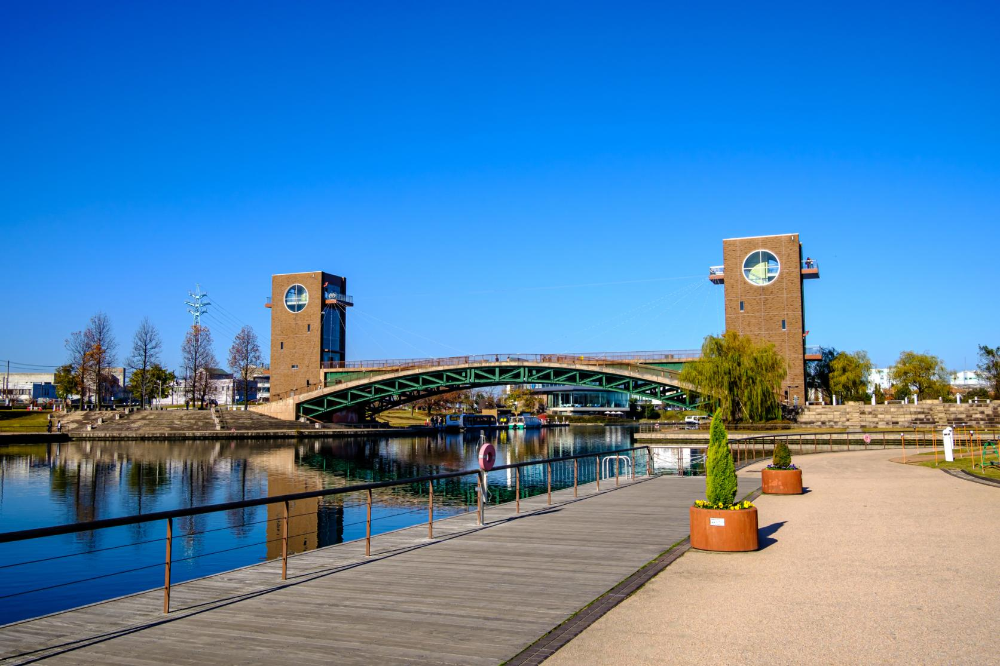

岐阜県神岡の地下1000m。
ノーベル賞につながった研究施設へ ピカと行こう！みなさんこんにちは、ピカです！
今回は、普段はなかなか入ることのできない鉱山の坑道を歩きながら、宇宙の謎に迫る大冒険ツアーを開催します！ 目的地は、ニュートリノ研究でノーベル賞につながった世界的研究施設「スーパーカミオカンデ」。
僕自身、大学院時代は素粒子物理学を研究していました。 今回は施設を見るだけではなく、ピカのニュートリノのオンライン授業付きで、楽しく、わかりやすくお届けします！
めっちゃ楽しみ！
7月18日(土)〜19日(日)
9:45
アパホテル富山駅前南 前(富山駅前徒歩5分 ※駅前にアパホテルがいくつかありますが「富山駅前南」です！)
20名
※抽選制
小学4年生以上
※お子様のみの参加不可
申込締切：6月19日(金) 23:59
現在30家族ほどから興味ありとのご連絡をいただいているため、今回は抽選制とさせていただきます。
大人 45,000円 ／ 子ども 40,000円
以下の費用を含みます。
※富山駅までの交通費、1日目・2日目の昼食代は含まれません。
※中学生以上は大人料金となります。参加費のお支払い方法は、参加者決定後にご案内します。

岐阜県神岡町の地下1000mにある世界最大級のニュートリノ観測施設です。 太陽や宇宙の果てから飛んでくる「ニュートリノ」を観測し、宇宙の成り立ちや星の爆発の秘密に迫る、まさに地底の宇宙研究所です。

神岡鉱山の本物の坑道やスーパーカミオカンデを見学できる特別イベントです。 普段は入ることのできない地下の世界を実際に歩きながら、研究施設のスケールを体感します。
※スーパーカミオカンデの装置の上までは行けますが、内部を見学することはできません。

スーパーカミオカンデやニュートリノについて楽しく学べる施設です。 併設の道の駅で昼食やお土産を見る予定です。

館内には体験型の展示があります。特に面白いと思った展示を、ピカがピックアップしてご案内します。

天気が良ければ、展望塔から立山連峰の絶景を眺めます。


富山を代表する美しい公園です。水上ラインでは、船ごと水のエレベーターに乗るような「閘門」体験もできます。

最後は天門橋周辺で集合写真を撮ってツアーを締めくくります。
9:45 アパホテル富山駅前南 集合
10:00 貸切バス出発
11:15 道の駅 宙ドーム・神岡 着
11:30 昼食・お土産
12:20 ひだ宇宙科学館 カミオカラボ 見学
13:30 神岡町コミュニティセンター 集合受付
14:00 カミオカンデ見学
17:30 ツアー終了
19:00 夕食
20:00 アパホテル富山駅前南 着
6:30〜9:30 朝食
8:15 ホテルフロント集合
8:30 出発
9:00 富山市科学博物館
11:00 富山市役所 展望塔（状況により判断）
11:30 昼食・自由時間
13:30 富岩運河環水公園 オノマトペ公園 集合
13:55 富岩水上ライン乗り場 集合
14:10 富岩水上ライン開始
15:30 天門橋で集合写真
16:00 解散
※予定は変更になる可能性があります。
ツアー前に、ピカのニュートリノ編オンライン授業を別日で開催します。
体調不良や発熱を含め、参加者都合のキャンセルは所定のキャンセル料が発生します。 台風等の荒天や交通機関の運休などにより安全な催行が困難と判断した場合は、主催者判断で中止または内容変更を行います。
主催者判断による中止の場合は、既に発生している実費を差し引いた金額を返金します。 振込手数料が生じた場合には、返金額より差し引かせていただきます。
申込みフォームは準備中です。完成次第、こちらに掲載します。
質問等は公式LINEよりお問い合わせください。